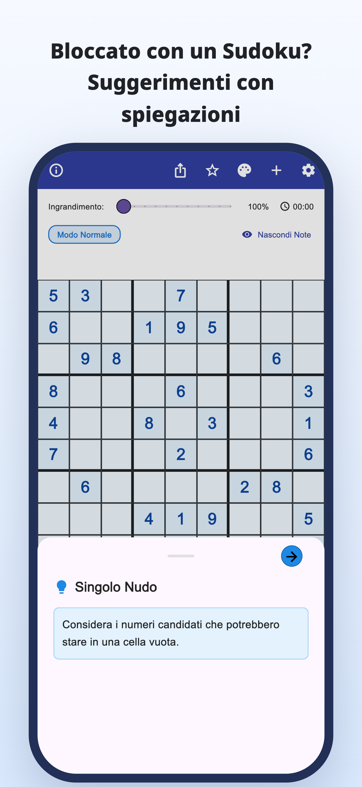
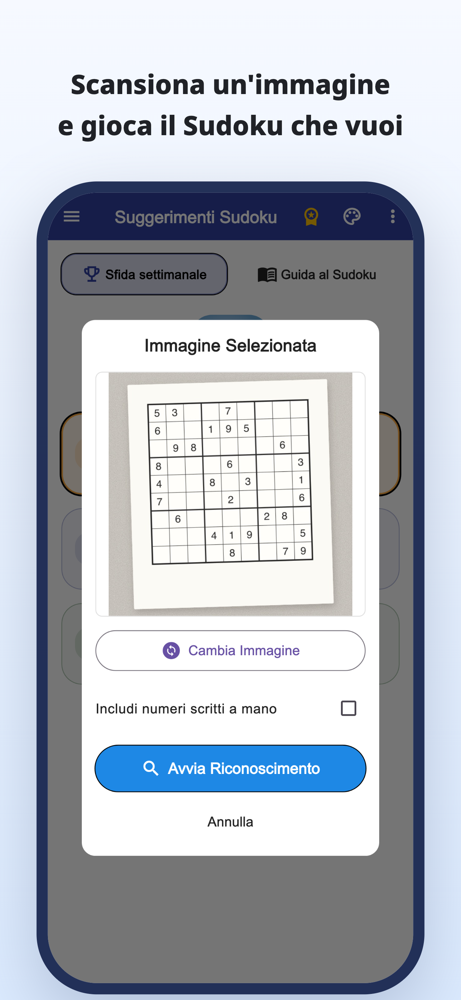
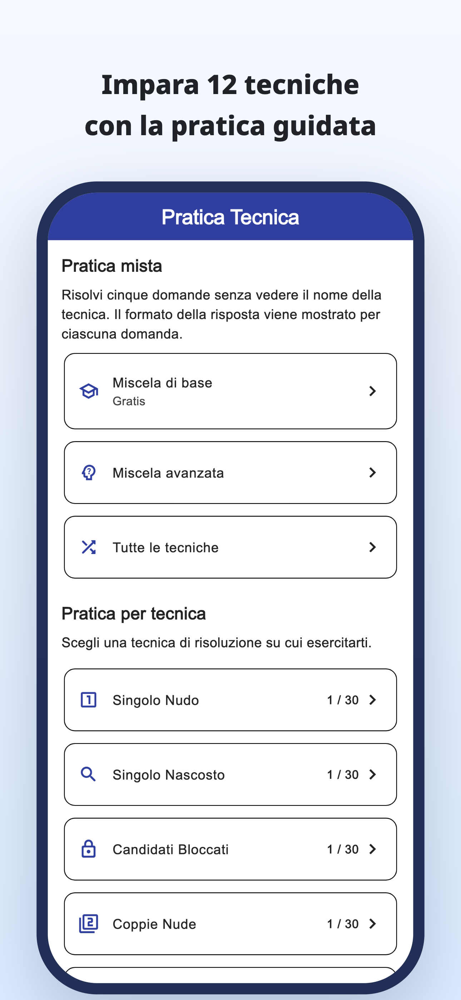
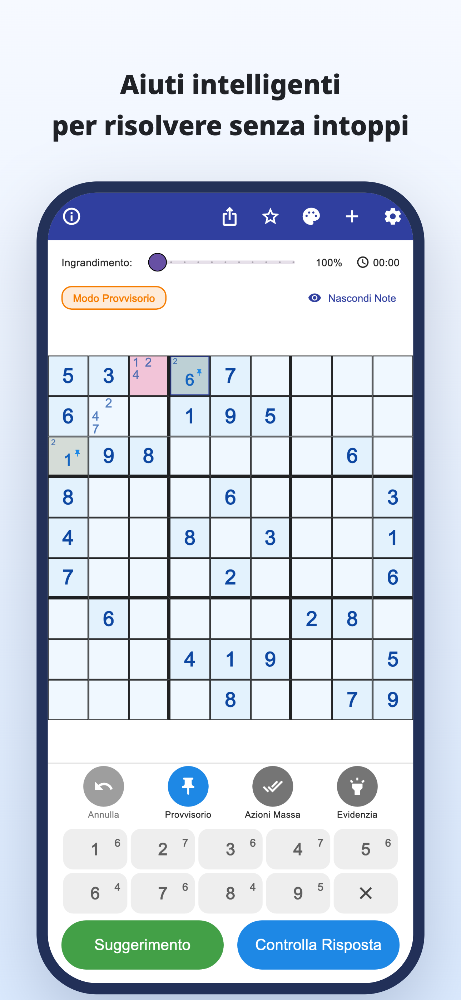
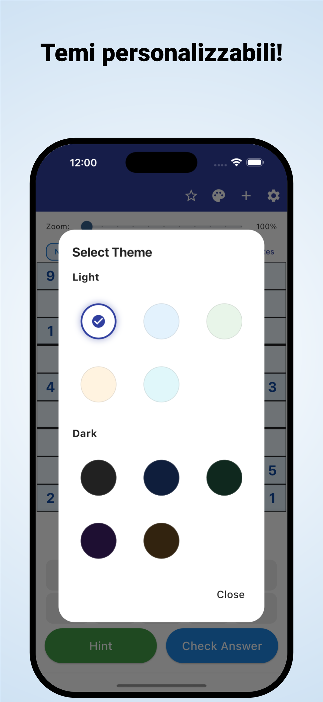

«Dove dovrei guardare adesso?»
Controlli la griglia più e più volte,
ma resti bloccato nello stesso punto.
Scansione con fotocamera · Indizi spiegati
Scansiona i sudoku di giornali e riviste.
Scopri perché un numero va in una casella e continua da solo.
iPhone e Android / Download gratuito · Acquisti in-app





Ti succede mentre giochi?
Controlli la griglia più e più volte,
ma resti bloccato nello stesso punto.
Perché quel numero va proprio lì?
Copiare la soluzione non ti basta.
Vuoi prendere il sudoku su carta che stai risolvendo
e continuarlo nell’app.
Da un ostacolo a un indizio
Leggi un sudoku di un giornale o una rivista da una foto, riducendo l’inserimento manuale dei numeri.
Lettura da immagineLeggi il ragionamento dietro una mossa e usalo per trovare il passo successivo, invece di copiare solo la risposta.
Indizi spiegatiConsulta spiegazioni ed esercizi dedicati alle tecniche e allenati a riconoscerle da solo.
Esercizi per tecnicaPer chi ama trovare la soluzione da sé
Importa la tua griglia e riprendi da dove eri rimasto.
Comprendi il passaggio difficile e poi continua da solo.
Per principianti e per chi vuole imparare un’altra tecnica.
Leggi · Prova · Esercitati
Inizia dal browser.
Leggi una guida o gioca una griglia completa.
Dalle note sui candidati alle tecniche e agli esercizi.
Prova a completare una griglia con gli indizi quando servono.
Scopri le regole e il piacere di collegare gli indizi.
Guarda la casella con il bordo blu e apri l’indizio.
Indizio per la prossima mossa
Controlla i candidati di una casella vuota.
Questo esempio web permette di provare una mossa. L’app ha una visualizzazione diversa.
Quando un sudoku ti blocca.
Scarica Suggerimenti Sudoku
Download gratuito · Acquisti in-app
L’app si scarica e si prova gratuitamente. Indizi, controlli e letture di immagini hanno limiti di utilizzo; alcune operazioni richiedono un annuncio video.
Premium è un abbonamento mensile o annuale. Rimuove gli annunci e include indizi e controlli illimitati. La lettura delle immagini resta limitata anche con Premium. Prezzi e condizioni sono indicati nell’app.
Importa una foto del sudoku. Controlla i numeri riconosciuti e correggi gli errori prima di iniziare. Sono supportati i sudoku classici di 9×9.
Puoi usare le griglie integrate, le spiegazioni e gli esercizi sulle tecniche. Alcune griglie e alcuni esercizi richiedono Premium.
Oltre a questa demo di una mossa, puoi giocare una griglia completa nel browser e consultare guide ed esercizi.
Guida al sudoku